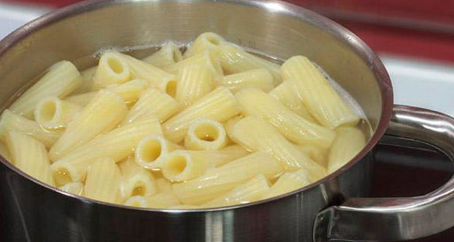
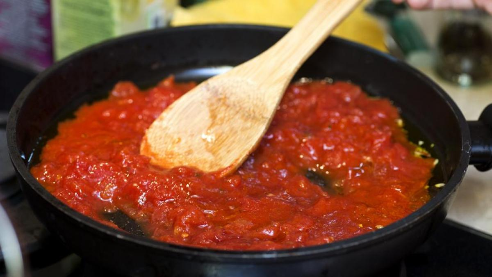

Recepta per preparar macarrons amb tomàquet
Ingredients
- 400 g de Macarrons
- 400 g de tomàquet triturat
- 1 ceba mitjana
- Oli d'oliva verge extra
- Sal al gust
- Formatge ratllat (Opcional)

1. Coure els macarrons
- Posa una olla gran amb abundant aigua i sal a bullir.
- Una vegada l'aigua estigui bullint, afegeix els macarrons.
- Cou els macarrons durant el temps indicat en el paquet (7-9 minuts).
- Passats el temps, escorre els macarrons i guarda'ls.

2. Prepara la sala de tomàquet
- Pela i talla finament la ceba.
- En una paella gran, afegeix un raig d'oli d'oliva i sofregeix la ceba a foc mitjà.
- Quan la ceba estigui transparent significara que estara sofregida, afegeix el tomàquet triturat.
- Afegeix sal al gust i deixa cuinar a foc lent entre 10-15 minuts.

3. Barreja i servir
- Afegeix els macarrons escorreguts a la paella amb la salsa de tomàquet.
- Barreja bé perquè els macarrons quedin ben impregnats amb la salsa.
- Serveix als plats i, si vols, empolvora una mica de formatge ratllat per sobre.